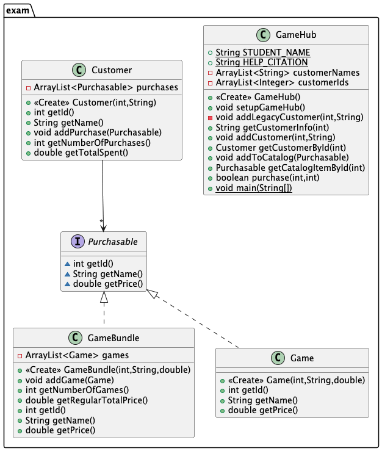

Take-Home Exam 1 · Coding Portion
Take-Home Exam 1 - GameHub
You've joined the development team behind GameHub, a small digital game storefront. The prototype works, but part of its customer-data design needs serious cleanup. Once you refactor it, the product team has another request: GameHub must support both individual games and game bundles without creating a separate purchase system for every kind of item it sells.
What this exam demonstrates
This exam is a small professional software-development task, not a syntax quiz. You'll show that you can:
Classes & objects
Design a class around the data and behavior it owns.
Object relationships
Decide which object should store, retrieve, and coordinate which data.
Collections
Select and use collections based on how the program needs to store, retrieve, and process data.
Interfaces
Use a shared capability so different types can be treated one way.
Refactoring & responsibility
Improve a design while preserving required behavior.
JUnit-based testing
Use tests as a safety net while you work.
You do not need inheritance, subclasses, abstract classes, instanceof,
casting, or exceptions anywhere in this exam. If your solution seems to need one
of these, stop and reconsider your design - none of them are necessary.
🚀 Start Here
- Download the starter project: Exam1GameHub.zip
- Extract/unzip it.
- In IntelliJ IDEA, choose Open and select the extracted
Exam1GameHubfolder - the folder containingpom.xml. Do not create a new IntelliJ project. - Trust the project if asked, and let IntelliJ finish loading and indexing (allow Maven to download dependencies) before you do anything else.
- In the project tree, locate the
exampackage undersrc/main/java.
You do not need to install Maven yourself. IntelliJ IDEA includes its own
bundled Maven. pom.xml already lists everything the project needs (JUnit 4 and
its own required files); IntelliJ downloads them automatically the first time you open the
project. You just need internet access for that first load.
- Open
GameHub.javaand replaceSTUDENT_NAMEwith your actual name. - Complete
HELP_CITATIONaccording to course policy (see the Syllabus's "Help Citation" section) - list anyone or anything outside CSSE220 materials that helped you, or state that you only used CSSE220 materials. - Locate the provided JUnit 4 tests under
src/test/java/examTestand the suite runnersrc/test/java/exam/RunAllTests.java.
Don't start editing yet. Read the next two sections first - they explain what the tests will and won't tell you, and what design problem you're actually walking into.
🧯 Know Your Safety Net: JUnit Tests
This project uses JUnit 4. You will use these tests constantly while you work, so make sure you know how to run them before you start coding.
Run one test class
- Open the test class you want to run.
- Click the green run icon beside the class name, or right-click the class and choose Run.
- Review the results in IntelliJ's Run/Test Results window.
Run the full suite
Open src/test/java/exam/RunAllTests.java and run it the same way. It runs every
visible test class in one pass.
The full test suite is NOT expected to pass when you first open the starter project. Several tests correspond to methods you haven't implemented yet - that is expected, not a sign something is broken.
Before you touch the customer representation, run
GameHubCustomerInfoTest by itself. That test should already
pass - it checks the customer information that already works against the
starter's given (legacy) representation. Keep it passing as you refactor.
Suggested workflow
- Run the appropriate test.
- Make a small change.
- Run the test again.
- Fix any issues before continuing.
- Run the full suite again as you complete more missions.
- Before submission, run the complete test suite one final time.
Red tests are feedback, not a disaster. Read the failed test's name and message to figure out which requirement isn't satisfied yet.
Before you submit, all provided tests in RunAllTests should pass.
Passing the visible tests is not, by itself, a guarantee of full credit. Additional instructor/autograder tests may check required behaviors and edge cases not covered by the visible tests - see "How This Exam Is Graded" below.
📐 Starting Design: This Is Not the Target Design
This diagram shows the design you're inheriting, generated from the unmodified starter code. Do not try to reproduce this diagram. Study it for design problems before you write any code.

- Look closely at what
GameHubactually stores today. - Which pieces of information describe the same real-world thing?
- What happens if GameHub needs one more piece of information about a customer later?
Recommended approach: Complete the missions in order and run the relevant JUnit tests after each mission.
Mission 1Understand the Legacy Code
Before changing anything:
- Inspect
GameHub. - Inspect the parallel customer collections it currently uses.
- Inspect the provided tests - they tell you what behavior already works and what's expected later.
- Run the designated initial regression test (
GameHubCustomerInfoTest) and confirm it passes. - Make sure you understand exactly what existing behavior must be preserved.
Mission 2Refactor the Customer Design
The prototype stores pieces of customer information in separate parallel collections
(customerNames, customerIds) instead of proper objects. Redesign this so
customer information is represented using appropriate objects.
Complete the Customer class and use it in GameHub. At minimum,
Customer needs:
Customer(int id, String name)getId(),getName()
GameHub.getCustomerInfo(int customerId) must keep returning the same information for
the same seeded customers after your refactor - that's what
GameHubCustomerInfoTest checks.
Think about which data belongs together, and which object should own that data and the
behavior that goes with it. You'll explain the design principle behind this yourself in
reflections.txt.
Mission 3Build GameHub's Collections
GameHub has two requirements to satisfy:
- Customers have unique integer IDs. GameHub must frequently retrieve a customer using that ID.
- Every catalog item has a unique integer ID. GameHub must frequently retrieve a catalog item using that ID.
- The catalog may contain both
GameandGameBundleobjects.
Select an appropriate Java collection for each requirement yourself - the specification above is enough to decide. Implement:
addCustomer(int id, String name)getCustomerById(int id)- returnsnullif no such customer existsaddToCatalog(Purchasable item)getCatalogItemById(int id)- returnsnullif no such item exists
A Game and a GameBundle must never share the same ID.
There is one shared catalog, not two.
Mission 4Game Bundles
GameHub now needs to sell bundles containing multiple games.
GameBundle already contains its game collection. Do not change the provided
collection type.
Complete these methods:
addGame(Game game)getNumberOfGames()getRegularTotalPrice()- the sum of the individual selling price of every game the bundle contains. This is not the bundle's own selling price - it's what a customer would pay buying each game separately.
getId(), getName(), and getPrice() also need to be
completed - getPrice() is the bundle's own selling price, stored independently of
getRegularTotalPrice().
Mission 5One Purchase Workflow
GameHub should be able to sell either an individual Game or a GameBundle
without requiring separate purchase methods for every type of item. Complete:
boolean purchase(int customerId, int itemId)Its observable behavior:
- Find the requested customer.
- Find the requested catalog item.
- If either ID does not exist, return
falseand change nothing. - Otherwise, record the purchase and return
true.
Do not use instanceof, casting, inheritance, or separate purchaseGame/
purchaseBundle methods. None of them are needed.
purchase() must support every type of item currently sold by GameHub.
Mission 6Customer Purchase History
Customer's purchase-history collection is already provided. Do not change its
provided type. Complete:
addPurchase(Purchasable item)getNumberOfPurchases()getTotalSpent()- the sum of the actual selling prices of everything the customer has purchased.
Mission 7Prove It Works
Run the complete JUnit 4 suite. Before moving on, check off:
- The starter's regression behavior still works.
- Customers can be added and retrieved.
- Catalog items can be added and retrieved.
- An individual
Gamepurchase works. - A
GameBundlepurchase works through the same purchase workflow. GameBundlecalculations (getNumberOfGames,getRegularTotalPrice) work.- Customer purchase count works.
- Total spent works.
- Invalid IDs are handled the way the specification describes.
STUDENT_NAMEis complete.HELP_CITATIONis complete.
The visible tests are guardrails, not the whole spec. Additional autograder/instructor tests may evaluate other required behavior.
Mission 8Generate Final UML
Generate a UML diagram from your completed Java implementation using the course's IntelliJ to PlantUML workflow. See Lab 09's UML generation steps for the plugin setup and workflow - it isn't repeated here.
- Generate the diagram from your final code, not a sketch made beforehand.
- Include
GameHub,Customer,Game,GameBundle, andPurchasable. - Submit the diagram as described in the Submission section below.
Your UML is evidence of the design you actually implemented - it should look like your code, not like the starting design diagram above.
Mission 9Design Reflection
Complete reflections.txt. Passing tests demonstrates that your program behaves
correctly; the reflection demonstrates that you understand why your design works.
Three design topics, so nothing here surprises you partway through:
- Customer refactoring and the CSSE220 design principle it addresses.
- How your collection choices match the way GameHub stores and retrieves different kinds of data.
- How
Purchasablelets onepurchase()workflow support bothGameandGameBundle.
There are no model answers on this page. Short, specific explanations that refer to your own classes, fields, and methods are worth more than generic definitions.
🤖 AI Assistance: Allowed, but Document It
This exam follows the course's AI policy (see the Syllabus's "AI Learning Log Policy" section for the authoritative version). For this exam specifically:
- AI assistance is permitted according to the course AI policy.
- You remain responsible for all submitted code and design decisions.
- You should understand and be able to explain everything you submit.
- AI-generated code is not automatically correct or appropriate for the concepts Exam 1 covers.
- You must document AI usage in
reflections.txt- Part B. - IDE-integrated AI assistants (e.g. an AI autocomplete/chat feature built into IntelliJ) count as AI use.
- AI usage itself is not rewarded or penalized - complete, honest documentation is what's required.
If you used AI, document for each tool: the tool's name, what you used it for, which part of your code/design/debugging/reflection it influenced, and what you personally verified, changed, rejected, or corrected afterward. You do not need to paste full chat transcripts or every prompt.
If you did not use AI, write exactly: "I did not use AI assistance on this exam."
📊 How This Exam Is Graded
The complete Exam 1 is worth 100 points, split between the paper portion and this coding portion.
| Portion | Points |
|---|---|
| Paper portion | 60 |
| Coding portion (this page) | 40 |
| Exam 1 total | 100 |
Automated Coding / JUnit - 30 points
| Category | Points |
|---|---|
| Customer refactor & regression behavior | 6 |
| Customer add/retrieve operations | 4 |
| Catalog add/retrieve operations (Game and GameBundle) | 4 |
| GameBundle operations | 4 |
| Purchase workflow (one method, both item types) | 7 |
| Purchase history / total spent | 4 |
Administrative (STUDENT_NAME/HELP_CITATION) | 1 |
| Subtotal | 30 |
Some of this credit comes from the visible tests you can run yourself; the rest comes from additional instructor/autograder tests that are intentionally not all shown to you in advance.
Design Reflection - 8 points (manually graded)
| Question | Points |
|---|---|
| Q1 - Refactoring / OO design reasoning | 3 |
| Q2 - Collection-choice reasoning | 2 |
Q3 - Purchasable/interface reasoning | 3 |
| Subtotal | 8 |
Final UML / Design Consistency - 2 points (manually graded)
- UML was generated from your completed implementation.
- Required classes/interface appear (
GameHub,Customer,Game,GameBundle,Purchasable). - The UML reasonably corresponds to your submitted Java design.
Visual polish is not graded.
AI Usage Documentation - required, not separately point-bearing
Every student must complete the AI Usage Documentation section of reflections.txt,
whether or not you used AI. It is graded for completion and meaningful disclosure as part of a
complete submission - not for whether you used AI, and it does not carry its own
exam points. A student who used no AI and clearly states so meets this requirement in full. A
student who used AI and documents it completely and specifically also meets it in full.
Coding portion: 30 (autograder) + 8 (reflection) + 2 (UML) = 40 points. Added to the 60-point paper portion, Exam 1 totals 100 points. The reflection and UML scores are entered as a manual Gradescope score alongside the autograder result.
✅ Submission
Submit to Gradescope:
- Your completed Java source files (the files Gradescope requests from your
Exam1GameHubproject). - Completed
reflections.txt(Parts A, B, and C). - Your final UML diagram, generated from your completed implementation.
STUDENT_NAMEcompleted inGameHub.java.HELP_CITATIONcompleted inGameHub.java.- The AI Usage Documentation section of
reflections.txtcompleted, even if you used no AI.
Before submitting, all provided tests in RunAllTests should pass.
After uploading, reopen your Gradescope submission and confirm every expected file was received.